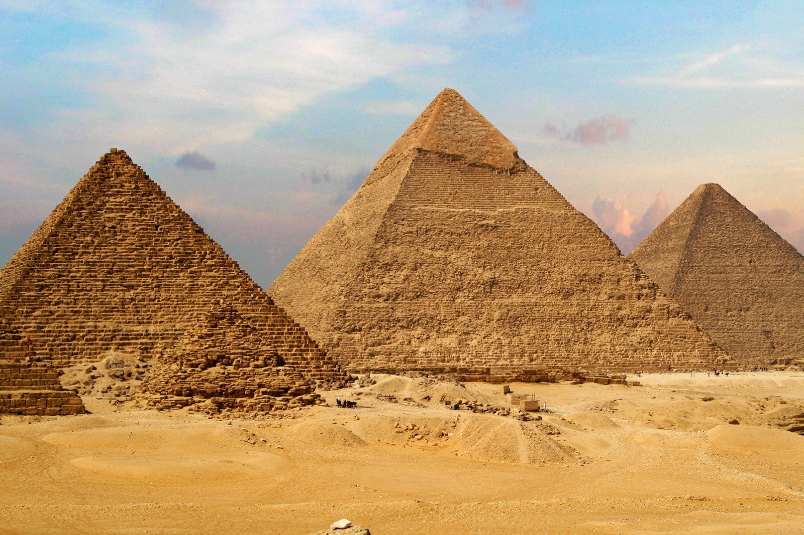
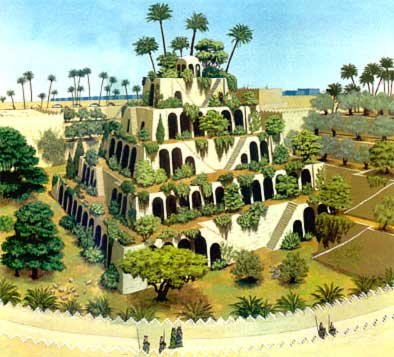
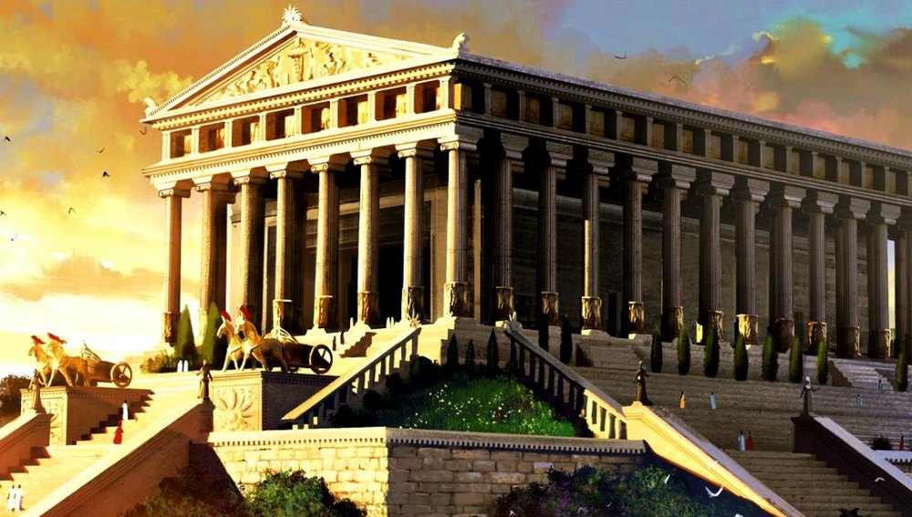
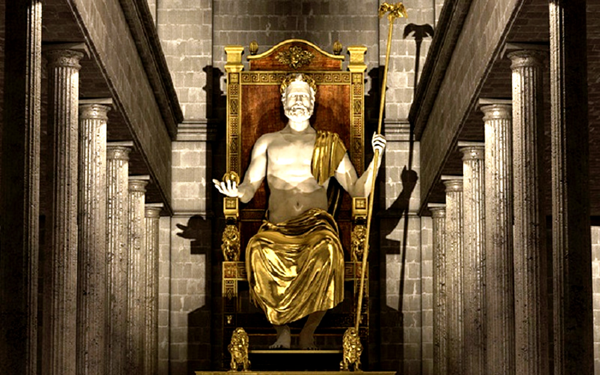
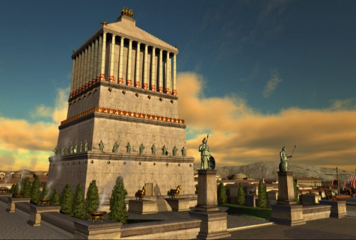
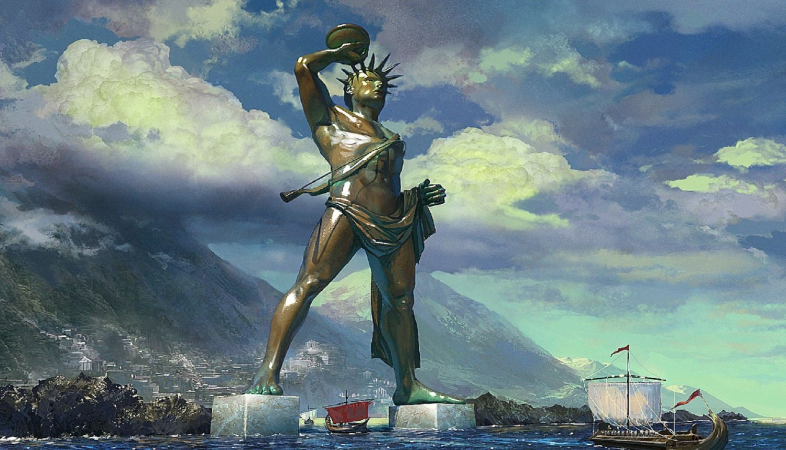
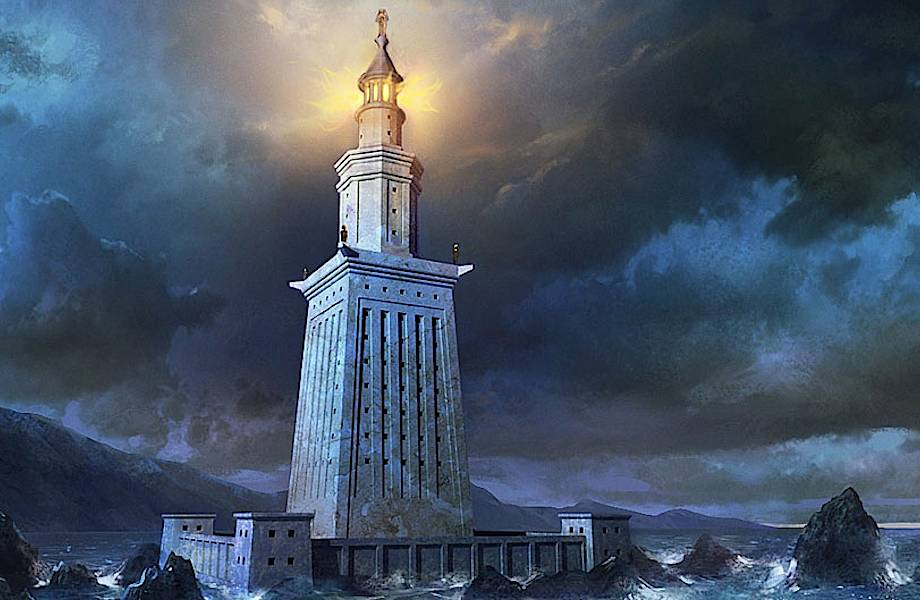

Египетские пирамиды
Пирамиды — единственное чудо из заветной семёрки, сохранившееся до наших дней. Оно же и самое древнее: возраст трёх великих пирамид, которыми восхищались греки и продолжаем поражаться мы, — фараонов Хеопса, Хефрена и Микерина — около пяти тысяч лет. Эти колоссальные сооружения пока неподвластны влиянию времени. Самая громадная — пирамида Хеопса — высотой 147метров сложена из 2 300 000 глыб известняка, каждая из них весом около двух тонн.
Сады Семирамиды (висячие сады Вавилона)
Легенда гласит, что царь Вавилона Навуходоносор II, правивший в VIвеке до нашей эры, решил подарить своей любимой жене Амитис, родившейся в зелёных просторах Мидии (древнее государство на западе современного Ирана), оазис — точную копию её родины.
Храм Артемиды Эфесской
Древнегреческий город Эфес на полуострове Малая Азия (территория современной Турции) его жители посвятили богине Артемиде. В VI веке до нашей эры они решили построить своей покровительнице величественный храм — Артемиссион, превосходящий красотой все известные святилища. Строительство поручили архитектору Херсифрону, который создал проект и взялся за дело. Задача оказалась настолько огромной и сложной, что до завершения работ Херсифрон не дожил. Дело продолжил его сын Метаген, но тоже не сумел довести до конца. Заканчивали стройку архитекторы Пеонит и Деметрий. Всего, как гласит история, строительство заняло 120 лет. И всё же прекрасный храм — гигантское строение площадью более 6000 квадратных метров, опоясанное двумя рядами высеченных из мрамора огромных колонн 18-метровой высоты, — был построен. Увы, простоял он не более ста лет. В 356 году до нашей эры житель Эфеса Герострат поджёг храм, решив таким образом увековечить своё имя.
Статуя Зевса Олимпийского
V век до нашей эры. Город Олимпия считался во всей Древней Греции священным. Здесь располагались храмы и святилища богов, именно здесь начали проводиться Олимпийские игры. Главной святыней Олимпии был храм верховного бога Зевса со статуей работы великого скульптора Фидия.
Галикарнасский мавзолей
Не только египетские фараоны заранее заботились о своих гробницах. Царь Мавсол, правитель города Галикарнас в Малой Азии, известный в истории лишь своей жадностью, решил сделать то же самое. Он приказал построить мавзолей, который должен был одновременно стать храмом, где Мавсолу воздавались бы божеские почести. Мавсол пригласил лучших архитекторов, и примерно в 360 году до нашей эры строительство началось. Сам Мавсол до его завершения не дожил, возведение мавзолея продолжила его вдова, царица Артемисия. Но и ей не удалось увидеть мавзолей построенным. Полностью усыпальница была закончена лишь при внуке Мавсола. Это было большое прямоугольное здание шириной 66 метров, длиной 77 и высотой 46 метров. Мраморные колонны и статуи, выложенные белым мрамором ступени, поднимающиеся в зал для жертвоприношений в честь царя… Историки и писатели древности единодушно описывали гробницу Мавсола как необыкновенно прекрасное сооружение.">
Колосс Родосский
В 305 году до нашей эры остров (и город) Родос вознамерился захватить полководец Деметрий. Как он ни старался, ничего у него не получилось. В честь одержанной победы родосцы решили возвести гигантскую статую бога Гелиоса, которого считали покровителем острова. Проект был уникален тем, что статую решили делать из бронзы. Существовавшая до тех пор технология бронзового литья шедеврами похвастаться не могла. Но родосский скульптор Харес сумел сделать невероятное. Он отлил частями, а потом собрал гиганта высотой 35 метров, слава о котором мгновенно (со скоростью передвижения парусных и вёсельных кораблей) разнеслась по всему Средиземноморью. К сожалению, простоял Колосс совсем недолго. Через 56 лет разрушительное землетрясение почти уничтожило город. Рухнула, разбилась и гигантская статуя. Обломки её лежали на земле ещё около тысячи лет, пока захватившие Родос арабы не продали их как бронзовый лом заплывшему на остров купцу.Как именно выглядела бронзовая скульптура, ныне точно неизвестно. Предположений много. Сейчас на острове Родос туристам предлагают массу вариантов изображений. В принципе, каждое из них выглядит впечатляюще.
Александрийский (Фаросский) маяк
Маяк на острове Фарос, открывавший вход в порт основанного Александром Македонским города Александрии (современный Египет), был построен в 280 году до нашей эры. Каменную башню высотой 120 метров возвели всего за пять лет, хотя для её строительства пришлось из острова сделать полуостров: между Фаросом и «большой землёй» насыпали дамбу, по которой доставляли строительные материалы. Маяк не только указывал путь судам. Одновременно он был и крепостью, где размещались немалый гарнизон, запасы воды и пищи. На башне античные инженеры установили систему увеличивающих зеркал, с помощью которой наблюдатели обнаруживали вражеские корабли задолго до того, как они появлялись в пределах порта. Но эта сторожевая башня была к тому же и прекрасна, потому и попала в список чудес. Уходили в историю сменяющие друг друга империи и государства, ветшал и маяк. Окончательно он был разрушен в XIV веке нашей эры. К сожалению, и в этом случае мы можем только предполагать, как именно выглядело это чудо света. Кроме словесных описаний современников иных свидетельств не сохранилось.